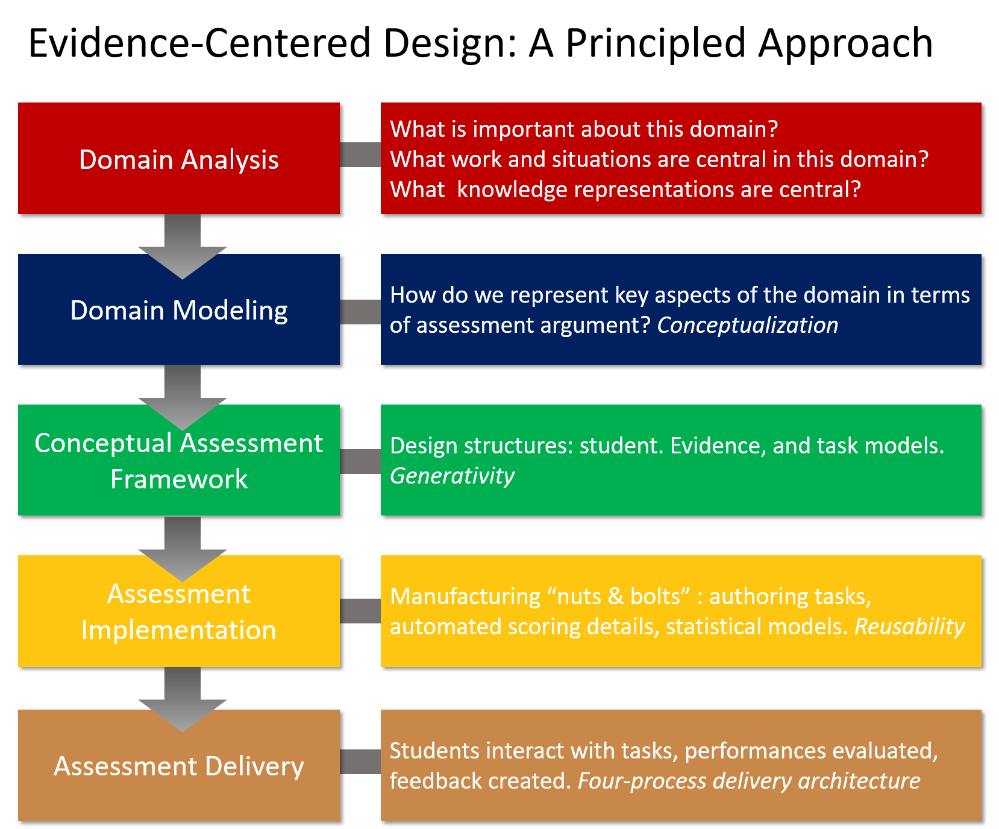

Assessment
1. ECD (Evidence Centered Design Framework)
2. Validation Scale Test
- Oh, H., Park, K., Choi, Y., Choi, G, Kim, Y, Lee, S. (2018). Screening Tool for Anxiety Disorders: Development and Validation of the Korean Anxiety Screening Assessment. Psychiatry Investigation
- 윤서원, 이빛나, 박기호, 정수연, 김신향, 박연수, 김초롱, 이원혜, 이승환, 최기홍, 최윤영 (2018). Development of Korean Depression Screening Assessment: Phase II Preliminary Validation Study. Korean Journal of Clinical Psychology, 37(2),
- 최윤영, 신주연(2018) .학업크래프팅 척도 타당화: 온라인과 오프라인 대학생을 중심으로. Journal of Educational Technology, 34(1), 73-99.
- 신주연, 최윤영 (2018). 한국판 학업의미척도 타당화 연구: 국내 대학생들을 대상으로. 한국심리학회지: 학교, 15(1), 1-26.
- 최윤영, 서동기, 정선호 (2018). 컴퓨터기반 교육시스템의 인식론적 프레임 학습을 위한 이론모형구축와 평가도구 개발. 18(3). 한국콘테츠학회논문지.
- 최윤영, 서동기 (2018). 인식론적 프레임 학습을 위한 컴퓨터 기반 교육프로그램 프로토타입 개발: 학습분석 중심으로. 9(3). Journal of the Korea Convergence Society(융합학회지). 9(3), 23-29.
- 김신향, 박시호, 제갈은주, 이원혜, 이승환, 최기홍, 최윤영 (2017). 한국형 우울장애 선별도구의 개발: 예비타당화연구 중심, Korean Journal of Clinical Psychology, 16(4),
- Choi, Y., Depiper, J., Jones, T., Nishio, M., Campbell, P., Smith T., Conant, D., Rust, A., Griffin, M. (2014). The Relationship Between Teachers’ Mathematical Content and Pedagogical Knowledge, Teachers’ Perceptions, and Student Achievement. Journal for Research in Mathematics Education. 45(4).
- 최윤영, 이경랑, 김수정(2012). 영어 강의 능력을 평가하기 위한 평가도구 개발: 타당도, 신뢰도, 문항의 질 검증. 외국언어교육, 19(3).
- MacGregor, D., & Choi, Y. (2011). A technical report of ACCESS (Assessing Comprehension and Communication in English State-to-State for English Language Learners) for ELLs: Center of Applied Linguistics.
- Rutstein, D., Choi, Y., and Lui, J. (2010, May). Evidence Centered Design of Simulation Based Assessment: A Case Study of Packet Tracer. Cisco System Inc.: Cisco Networking Academy W